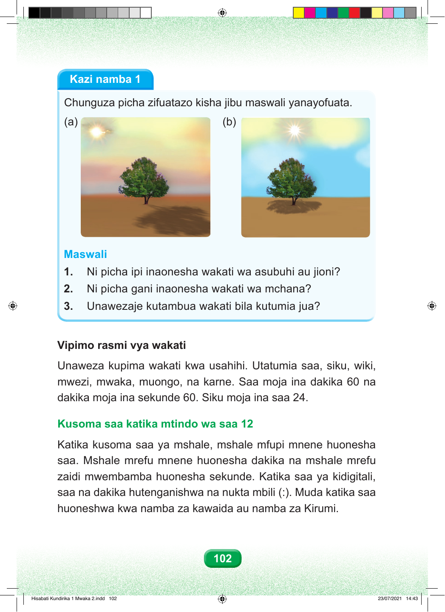

Kazi namba 1 Chunguza picha zifuatazo kisha jibu maswali yanayofuata. (a) (b) Maswali 1. Ni picha ipi inaonesha wakati wa asubuhi au jioni? 2. Ni picha gani inaonesha wakati wa mchana? 3. Unawezaje kutambua wakati bila kutumia jua? Vipimo rasmi vya wakati Unaweza kupima wakati kwa usahihi. Utatumia saa, siku, wiki, mwezi, mwaka, muongo, na karne. Saa moja ina dakika 60 na dakika moja ina sekunde 60. Siku moja ina saa 24. Kusoma saa katika mtindo wa saa 12 Katika kusoma saa ya mshale, mshale mfupi mnene huonesha saa. Mshale mrefu mnene huonesha dakika na mshale mrefu zaidi mwembamba huonesha sekunde. Katika saa ya kidigitali, saa na dakika hutenganishwa na nukta mbili (:). Muda katika saa huoneshwa kwa namba za kawaida au namba za Kirumi. 102 Hisabati Kundirika 1 Mwaka 2.indd 102 23/07/2021 14:43